04 / LIVE DEMO
真机跑一遍，不是概念图。
下面是 ShopMind 在本地真实运行的录屏与逐步截图 —— 从新建任务到导出内容包，全程可回溯，全部来自同一次真实任务。
Screen Recording
五步走完，
一整套创意包就绪。
录屏默认静音，进入视口时自动播放，滚出视口暂停。它记录的是本地 8080 端口上的真实操作，而非设计的动效演示。
录屏为演示数据，界面中的品牌、商品与评价均不代表真实用户反馈。
Step by Step
点开每一步，
看它到底做了什么。
五张截图取自同一次真实任务，可以手动切换，也可以让它自动轮播。键盘方向键同样可用。
STEPS
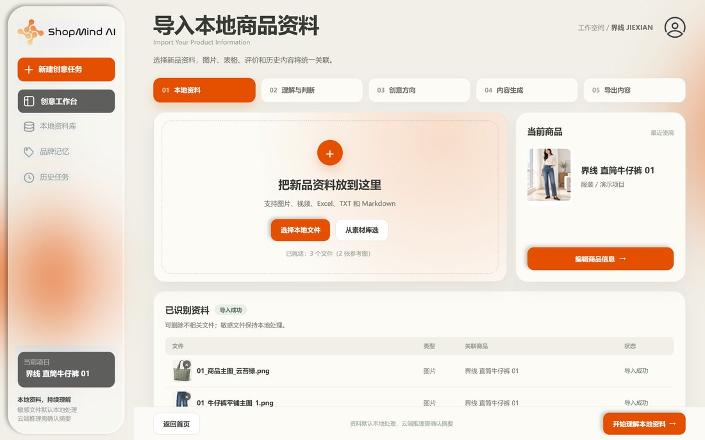
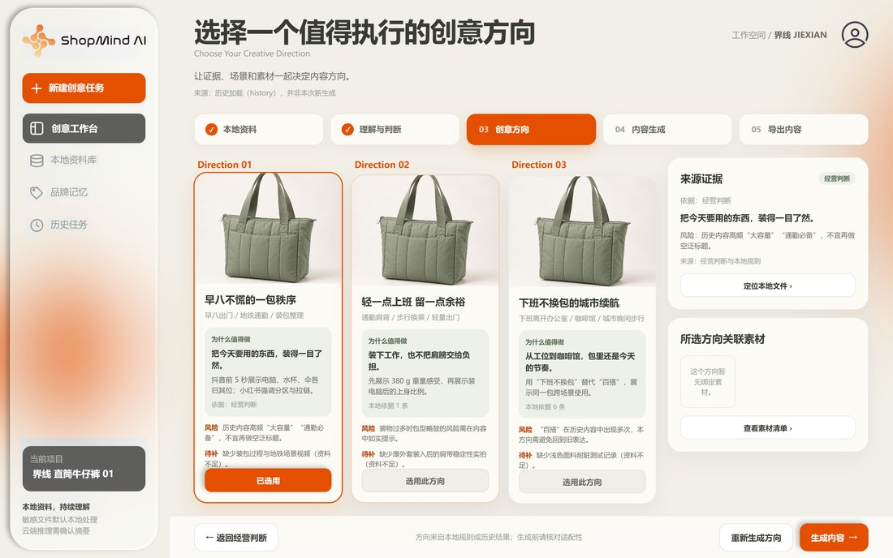
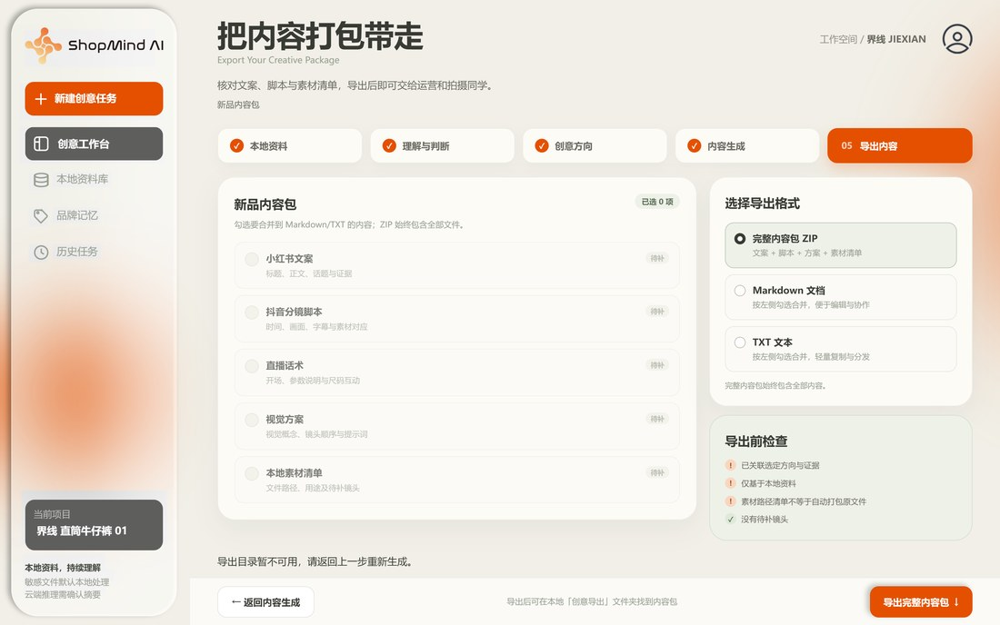
Product Tour
界面走一遍。
原生 HTML / CSS / JS 前端，零构建依赖。界面中的每个结论都能点开查看本地依据。
新建创意任务 · 五步流程商品录入 → AI 理解 → 创意方向 → 内容生成 → 导出，进度一目了然
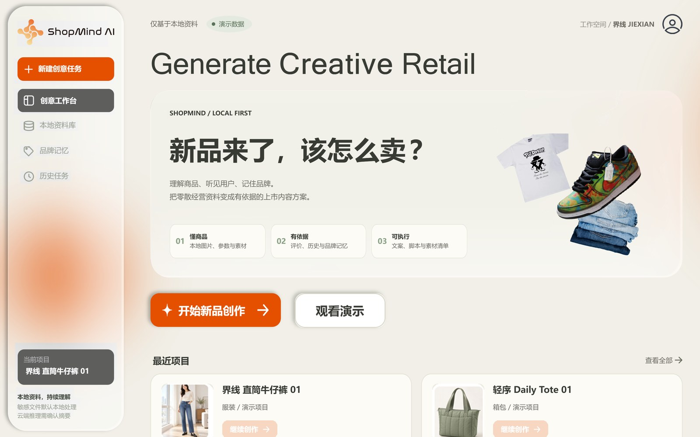
首页演示素材包与本地创作项目的统一入口
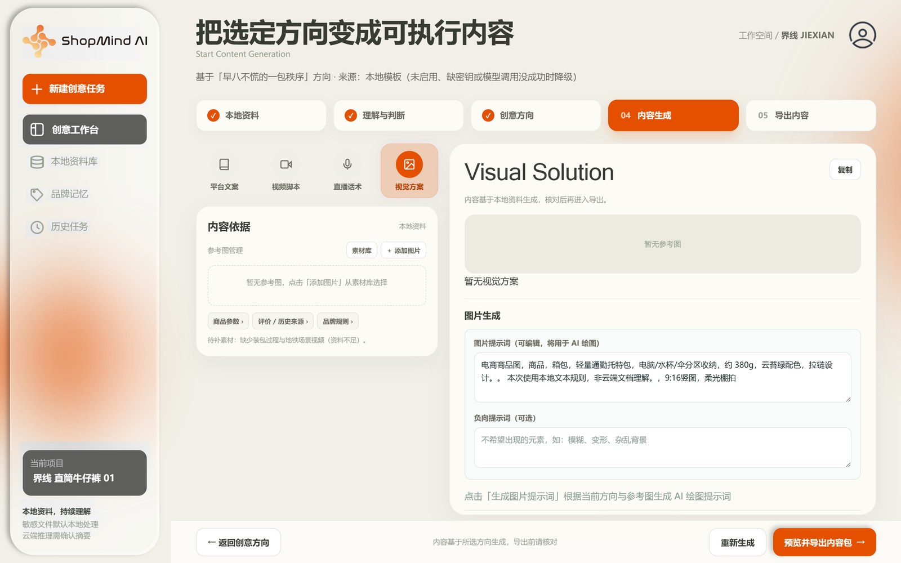
生成结果 · 小红书图文 / 抖音口播每条内容都标注「AI 生成 · 基于商品理解」
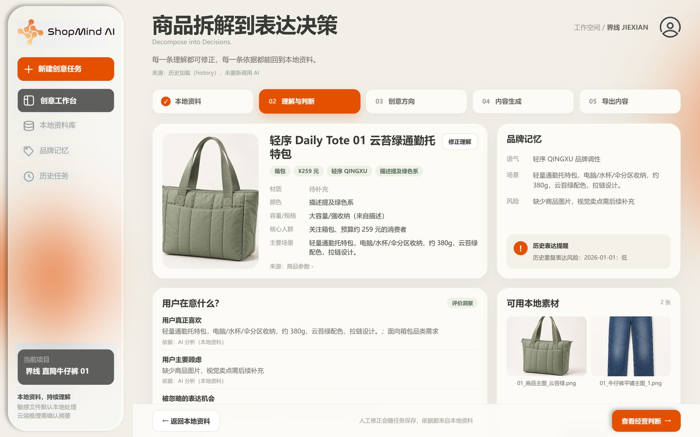
理解卡 · 视觉方案与证据商品事实、可用素材、镜头顺序与待补拍清单
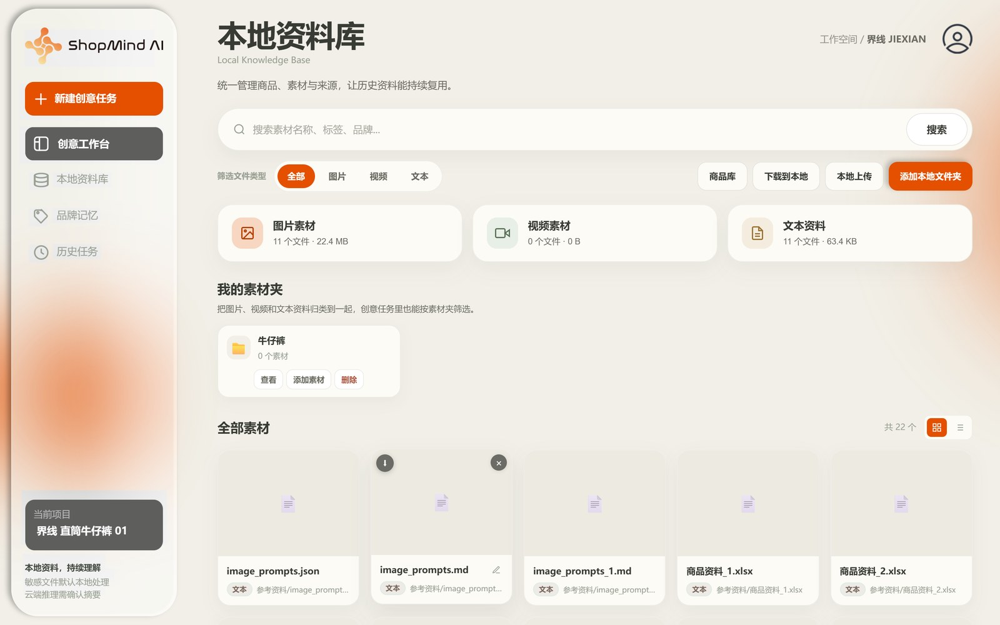
素材库图片 / 视频 / 文本资料统一管理，支持自定义素材夹
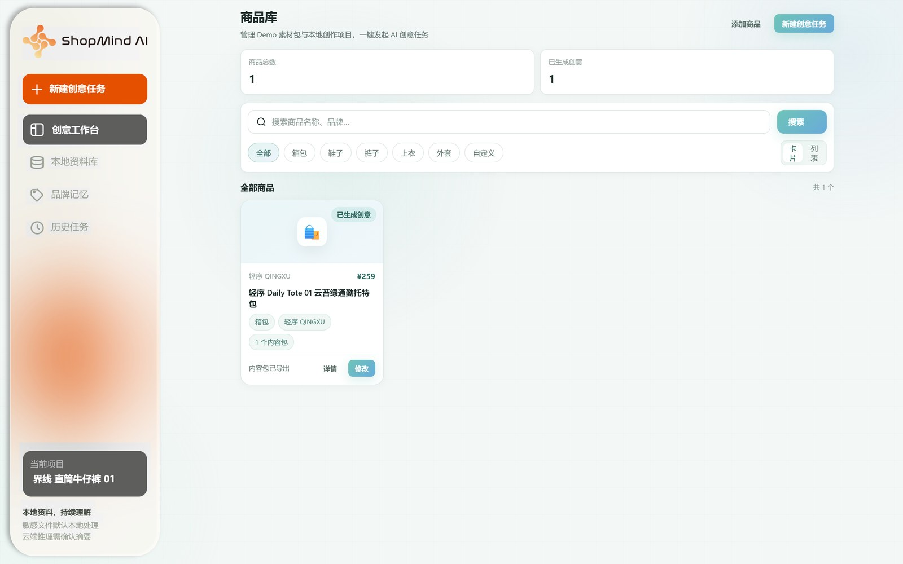
商品库聚合演示素材与本地创作项目，一键发起创意任务
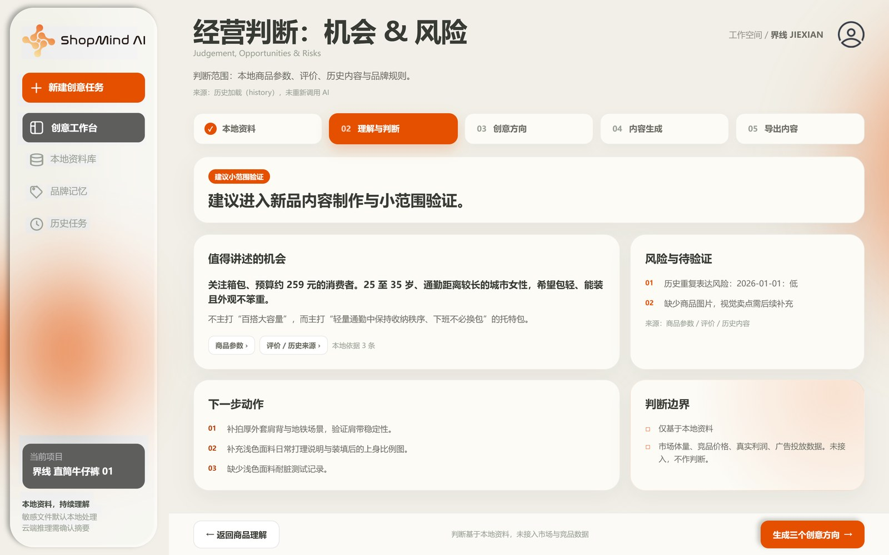
经营判断 · 机会与风险机会、风险与停止条件、下一步行动、判断边界分栏呈现
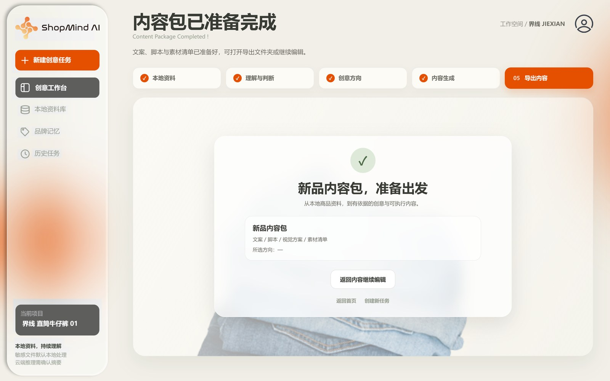
导出完成内容包与六渠道正文已归档，可直接交给运营
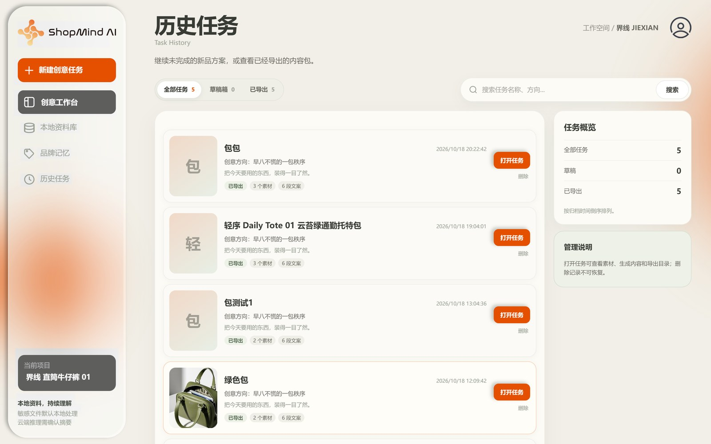
历史任务草稿与已导出一眼区分，随时回到任意一步继续
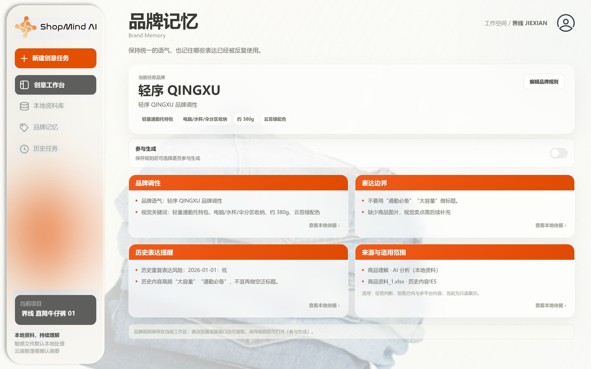
品牌记忆品牌语气、场景与要避开的表达，存在当前工作区里
Real Output · 演示数据
成品长这样。
以下内容来自演示素材包「轻序 Daily Tote 01 云苔绿」，由 ShopMind 基于该商品资料与评价生成，方向与证据一并在界面上可查。
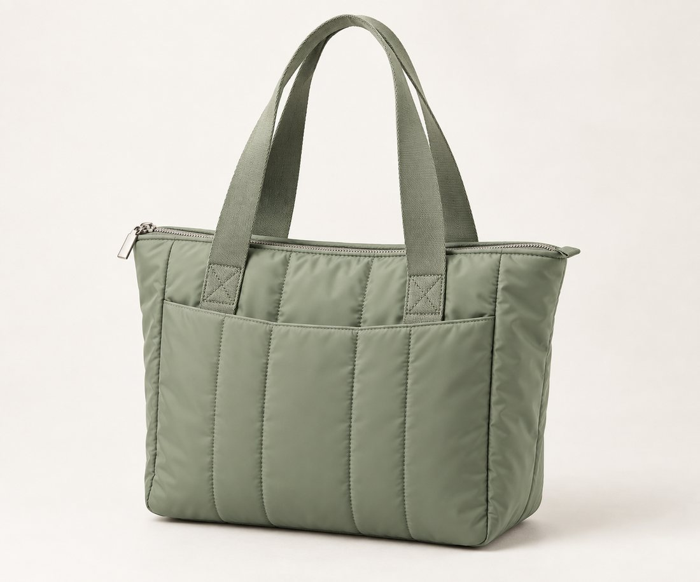

下班后不想换包的人，终于被这只云苔绿托特理解了
以前我选通勤包，只看能不能装电脑。
后来才发现，真正让我每天背下去的，是它不会让我在下班后立刻想换包。
这只云苔绿托特包，电脑、水杯、伞和零碎小物都能分开放好；拉上拉链去挤地铁，也更有安全感。重点是它的体积没有把人压得很「上班」，拎去咖啡馆也很自然。
我最喜欢的是那种不用重新整理、不用重新搭配的轻松感：从工位出发，直接把晚上的时间还给自己。
方向 A · 早八不慌的一包秩序
0–3s画面：桌面上一堆电脑、水杯、伞、耳机。字幕：早八最怕的不是迟到，是东西找不到。
3–8s画面：依次放入包内，展示电脑位、侧边水杯位与内部分区。字幕：电脑、水杯、伞，各归各位。
8–12s画面：拉上拉链，再将手机放进前侧口袋。字幕：地铁里，拉上就安心一点。
12–17s画面：肩背出办公楼。字幕：不需要大到笨重，刚好装下今天。
17–20s画面：包与人物半身特写。字幕：轻序 Daily Tote 01。
方向 B · 轻一点上班，留一点余裕
目标人群：讨厌负担感、重视穿搭比例的城市女性。
核心洞察：用户不想背一个功能多却显笨重的包；轻量既是身体负担，也是一种从容感。
核心表达：装下工作，也不把肩膀交给负担。
- 证据评价高频提及「轻」「不压肩」；商品参数约 380 g。
- 素材03 通勤场景图、视频 1 空包拎起、视频 4 肩背出门。
- 禁忌不使用「显瘦神器」「一秒显瘦」等夸张说法。
Kuaishou
老铁们，这个通勤包真的实在
更直接的价格锚点与生活化口语，少形容词，多实在话。
Taobao PDP
分区收纳轻便托特包
卖点、规格、适用人群与使用场景，结构化到可扫读。
Visual Prompt
早八不慌的一包秩序 · 视觉概念
画幅、色彩、材质与镜头概念，附待补拍清单与资料缺口。
声明
以上品牌、商品参数、评价与生成内容均为比赛演示数据，不代表真实用户反馈或真实经营表现。内容仍需人工审阅后发布。